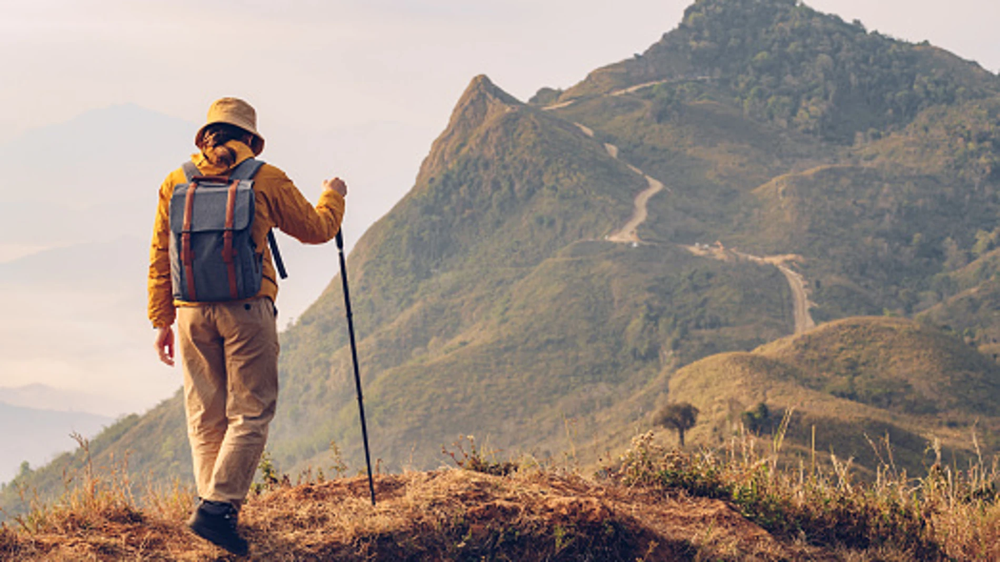

Naturaleza
Mountain Bike

Una de mis mayores aficiones es el mountain bike.
También se conoce como MTB o ciclismo de montaña, es un emocionante deporte y actividad recreativa que implica montar bicicletas especialmente diseñadas en terrenos accidentados y naturales, como senderos forestales, montañas, colinas y caminos de tierra.
Este deporte combina la resistencia física con habilidades técnicas, ya que los ciclistas deben enfrentarse a una variedad de obstáculos, como rocas, raíces, descensos empinados y ascensos desafiantes.
Senderismo
El senderismo me permite sumergirme en la belleza de la naturaleza de una manera única.
Caminar a través de bosques, subir montañas o seguir rutas que serpentean junto a arroyos y cascadas me brinda una profunda conexión con el mundo natural.
Puedo admirar la flora y fauna local, respirar aire fresco y sentirme parte de un ecosistema que a menudo pasa desapercibido en la vida cotidiana.
Kayak

El kayak, esta actividad solo la he practicado dos veces en la vida.
A pesar de eso, me parece una actividad acuática muy emocionante.
Consiste en navegar en una pequeña embarcación, sobre aguas tranquilas o en aguas bravas, dependiendo de la preferencia del aventurero. Este deporte combina la exploración, la aventura y la conexión con la naturaleza de una manera única.